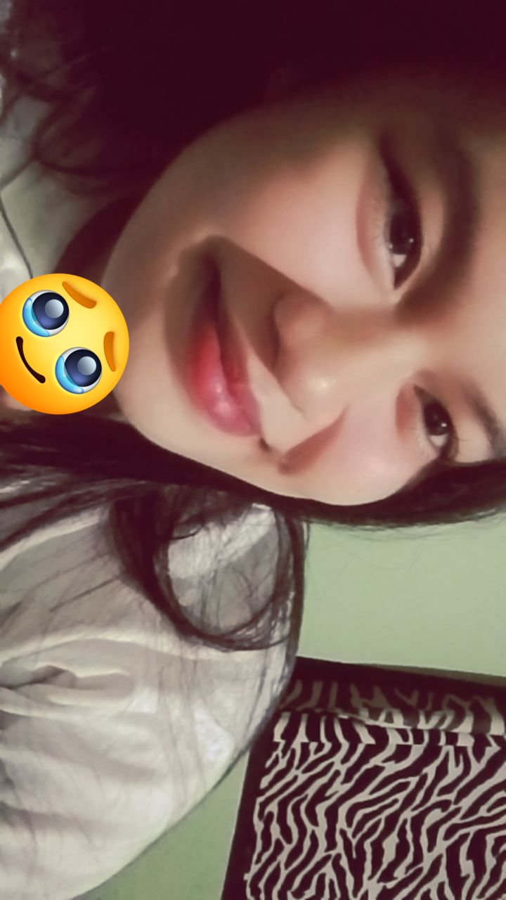
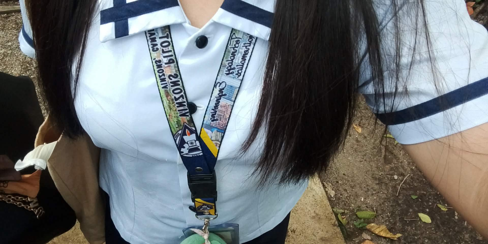
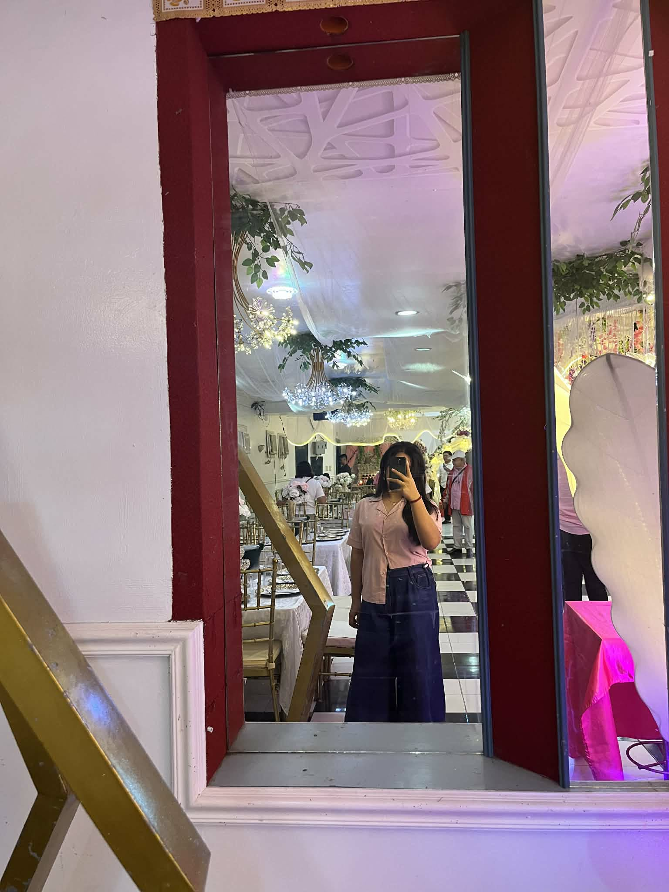

This website is dedicated to the love of my life, who makes every day special.
Thank you for being my everything. I love you more than words can say!
Alam mo po ba, sobrang thankful ako na dumating ka sa buhay ko. Kahit malayo tayo sa isa’t isa, ramdam ko pa rin ang presensya mo sa bawat araw. Hindi ako nagsisisi kahit kaunti man lang, kasi bawat oras na kausap kita ay puno ng saya at pagmamahal. Yung sinabi mo noon na baka gamitin lang kita para makalimutan yung isang tao nagkamali po dun. Alam mo ba, nung naglaro tayo kinikilig na talaga ako that time, kung alam mo lang talaga mga nararamdaman ko noon HAHAHAH. Patuloy tayo sa sinasabi ko.
Ikaw ang dahilan kung bakit mas masaya ang bawat umaga, kahit na magkalayo tayo, at ikaw din ang lakas ko sa bawat pagsubok. Sa bawat tawag at mensahe mo, nararamdam ko ang init ng pagmamahal mo, at sa bawat video call natin, ramdam ko ang tunay na tahanan.
At kahit minsan ay tinataboy mo ako, naiintindihan ko naman kung bakit ka ganon alam kong meron kang avoidant attachment issue. Pero hindi yun dahilan para sumuko o iwan ka, kasi mas lalo pa akong na-motivate na mahalin ka nang buong puso dahil dun.
Kahit minsan nagseselos ako tapos bigla akong nawawala, sana maintindihan mo na hindi yun dahil ayaw ko na, kundi dahil sobra kitang mahal at natatakot lang akong mawalan ng halaga sa’yo. Sorry po ulit sa mga pagkakamali ko, sa mga oras na nasaktan kita, at sa mga bagay na hindi ko nagawa nang tama.
Sana mapatawad mo pa ako, kasi ang tanging hiling ko ay manatili ka sa tabi ko, kahit gaano pa kalayo ang pagitan natin. Pangako, patuloy kong ipapakita sayo araw-araw kung gaano kita kamahal, at kung gaano ako nagpapasalamat na ikaw ang kasama ko sa buhay na ito.
Hindi ko man maibigay ang lahat ng bagay sa mundo, ibibigay ko ang buong puso ko sayo, buo at tapat. Ikaw ang inspirasyon ko, ang dahilan kung bakit patuloy akong nangangarap. Salamat dahil pinili mo akong mahalin, salamat sa pagtanggap mo sa akin kahit hindi ako perpekto.
At sa bawat bukas na darating, ikaw at ikaw lang ang pipiliin ko, kasi ikaw ang aking tahanan, ang aking ligaya, at ang aking walang hanggan. Kahit gaano pa kahaba ang distansya, kahit gaano pa katagal ang paghihintay, hindi magbabago ang pagmamahal ko sayo. Hanggang sa araw na muli tayong magsama, pangako, mas lalo kitang mamahalin.
ILOVEYOUSOMUCHH POTATO KO, MY BABY, MY SUGARHONEYBUNCHYY KOOOOO. Mahal na mahal po kita, potato ko, at hanggat kaya ko gagawin ko ang lahat huhu. Thank you so much po ulit kase tinanggap mo ako. Iloveyououu!!!